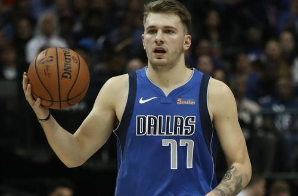

卢卡·东契奇（Luka Doncic），1999年2月28日出生于斯洛文尼亚卢布尔雅那（Ljubljana, Slovenia），斯洛文尼亚职业篮球运动员，司职小前锋，效力于NBA达拉斯独行侠队。
卢卡·东契奇的职业生涯开始于西班牙甲级联赛皇家马德里篮球俱乐部。2018年NBA选秀，卢卡·东契奇在首轮第3顺位被亚特兰大老鹰队选中，随后被交易至达拉斯独行侠队，新秀赛季当选最佳新秀并入选最佳新秀阵容第一阵容。
东契奇早年在斯洛文尼亚的奥林匹亚联盟俱乐部的少年队训练，2012年4月U13巡回赛罗马站比赛中一人独得54分，抢下11个篮板，送出10次助攻,获得比赛的MVP。
在2012年2月在西甲发展联盟决赛皇马对阵巴塞罗那的比赛中，作为从奥林匹亚联盟租借来球员身份登场的东契奇砍下20分，皇马主教练看中其潜力，9月仅13岁的天才球员就被皇马招致麾下，他跟皇马签了一份为期5年的合同。
由于在皇马U16队中的优异表现，2014-2015赛季他继续代表皇马U18队参加比赛，当然随着年龄和球技的增长，他渐渐成为了皇马青年队的领军人物，场均得分能拿下14.5分，6.2个篮板，3.1次助攻，帮助球队在西班牙丙级联赛第二小组中拿到第一名的成绩。
2015年东契奇带领球队获得洛斯皮塔莱巡回赛冠军，虽然他比绝大部分的球员都要小两岁，但是因为他优异的表现他还是入选了第一阵容。
2015年他代表皇马参加了欧洲篮协举办的阿迪达斯下一代篮球锦标赛，带领球队击败了卫冕冠军贝尔格莱德红星队，荣膺总决赛MVP。
东契奇